KOTEC works across a broad technology ecosystem to deliver secure, connected and operationally relevant solutions.
The company profile highlights these technology brands and solution platforms.
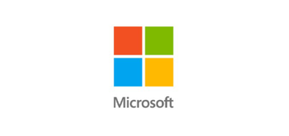
Microsoft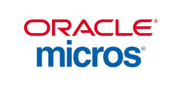
Oracle MICROS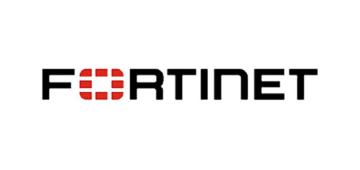
Fortinet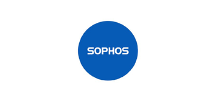
Sophos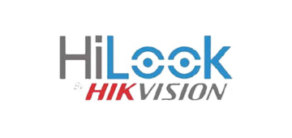
Hikvision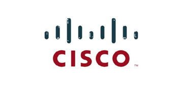
Cisco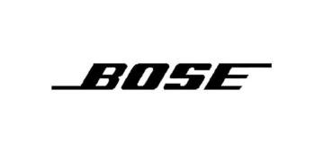
Bose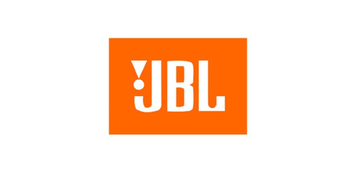
JBL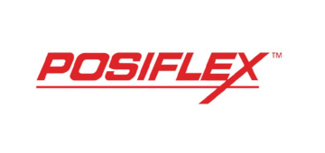
POSIFLEX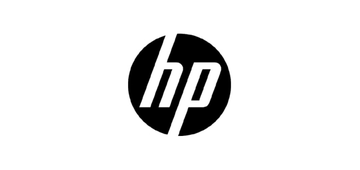
HP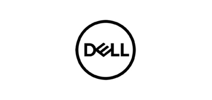
Dell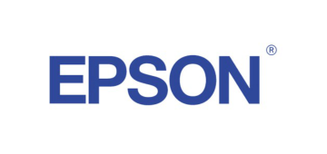
Epson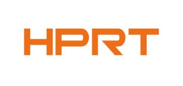
HPRTKOTEC brings different technology areas together so infrastructure, security, networking, applications and operational systems can be planned as one environment rather than isolated products.
Share your environment with us and we can align the solution accordingly.